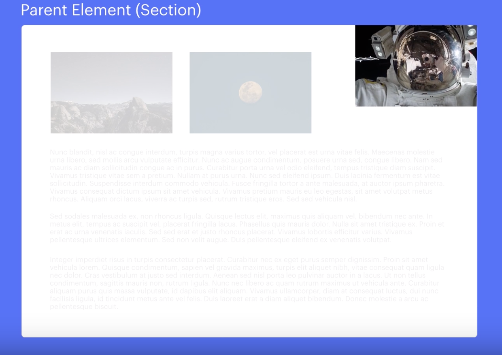

What are the differences between relative, absolute, and fixed positioning?
The position property is a CSS style which specifies the positioning of an element. These positioning attributes can help you manipulate the location of an element on a web page.
Relative positioning: Relative positioning just means that it is relative to itself. For example if you set an elements position to relative but with no other positioning attributes, there will be no change to the positioning of the element at all. If you do give the element additional positioning eg left: 25px; the element will shift 25px to the left of where it would normally be. Using “position: relative” for an element doesn’t change another elements position which means you can overlap other elements without affecting the document flow.
Absolute positioning: The affects of absolute positioning is summarised succinctly in its name - you can literally place any element where you want to. It is positioned automatically to the starting point (top left) of its parent element. If it doesn’t have a parent element the initial html doc will be its parent. Absolute positioning is removed from document flow - meaning that it is not affected by other elements positioning and other elements positioning is not affected by it.
Fixed positioning: An element with fixed positioning is fixed to the viewport aka the computer screen, phone screen or whatever device you’re using to view your html document. The element is completely removed from the document flow which means that it’s positioning is not affected by other elements and other elements are not affected by it. Fixed elements are also not affected by scrolling aka the element will stay right where it is when scrolling the page. Fixed positioning is an affective way of achieving a fixed sidebar or navigational bar that can be viewed and accessed at all times.